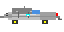
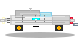

🚗 Test DeLorean 8-bit SVG
Version Principale (player.svg)
Dimensions: 64x32px
Usage: Sprite principal du joueur
Chemin: assets/images/player.svg

Version Alternative (delorean-alt.svg)
Dimensions: 80x40px
Usage: Version détaillée
Chemin: assets/images/delorean-alt.svg

Comparaison avec les autres sprites
Ennemi: assets/images/enemy.svg
Projectile: assets/images/bullet.svg
🎮 Instructions de Test
1. Vérifiez l'affichage: Les DeLorean doivent apparaître clairement
2. Lancez le jeu: ./start.sh puis http://localhost:8000
3. Vérifiez la console: Logs de chargement des assets SVG
4. Jouez: La DeLorean doit remplacer le vaisseau par défaut
🔧 Caractéristiques DeLorean
✅ Carrosserie inox: Couleur argentée authentique
✅ Flux Capacitor: Élément cyan central
✅ Portes papillon: Détails des charnières
✅ Jantes dorées: Style rétro années 80
✅ Phares/Feux: Blancs avant, rouges arrière
✅ Lignes de vitesse: Effet de mouvement spatial